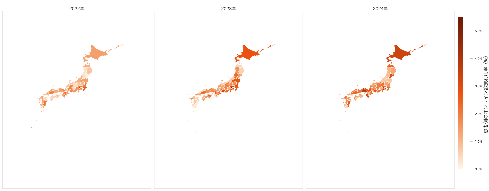
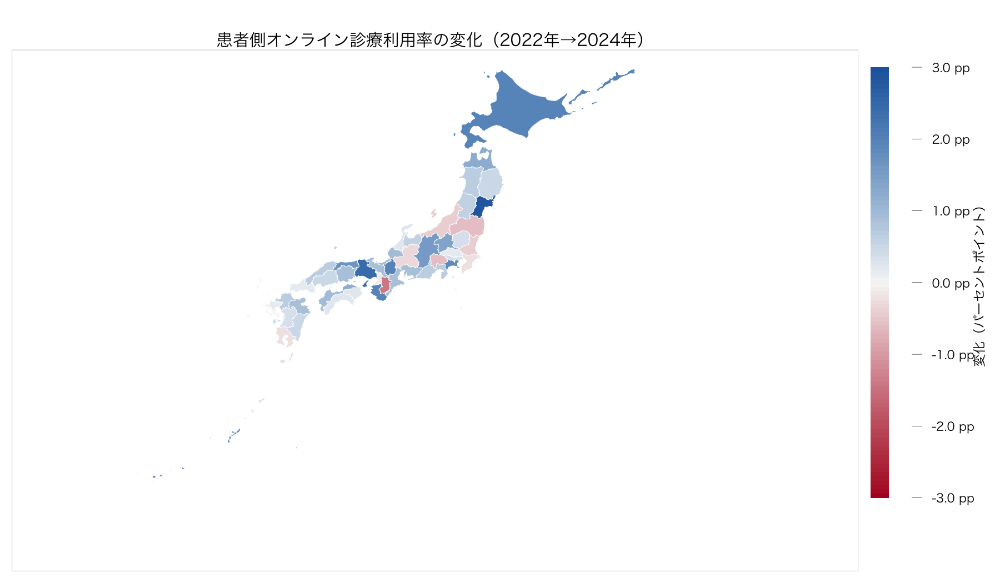

この分析は、総務省「通信利用動向調査」の回答者の居住都道府県別・自己申告による「過去1年間のオンライン診療利用率」を可視化したものである。居住地の患者側地域像を補助的に示すが、NDBの患者住所地集計ではない。また、保険診療と自由診療を区別しないため、NDB保険診療の需要量や都道府県別の需給比を測るものではない。


| 年 | 47都道府県の単純平均 | 都道府県数 |
|---|---|---|
| 2022 | 1.3% | 47 |
| 2023 | 1.7% | 47 |
| 2024 | 2.0% | 47 |
2022年から2024年に1.5ポイント以上上昇したのは 9 県である。ただし、2022年と2024年の両端で、公表標本数×公表率による利用者数目安が10人以上なのは 1 県のみだった。以下の『増加』は、仮説生成のための記述であり、複雑標本設計を反映した差の検定ではない。
| 居住都道府県 | 2022年 | 2024年 | 変化 | 利用者数目安 2022 | 利用者数目安 2024 | 両端10人以上 |
|---|---|---|---|---|---|---|
| 宮城県 | 0.1% | 3.0% | +2.9ポイント | 0.7 | 19.9 | いいえ |
| 兵庫県 | 1.3% | 3.8% | +2.5ポイント | 6.2 | 23.5 | いいえ |
| 北海道 | 1.4% | 3.4% | +2.0ポイント | 9.1 | 15.9 | いいえ |
| 滋賀県 | 0.9% | 2.9% | +2.0ポイント | 6.2 | 22.2 | いいえ |
| 和歌山県 | 1.3% | 3.3% | +2.0ポイント | 8.0 | 16.7 | いいえ |
| 神奈川県 | 2.0% | 3.9% | +1.9ポイント | 13.1 | 26.1 | はい |
| 鳥取県 | 0.4% | 2.1% | +1.7ポイント | 2.5 | 12.5 | いいえ |
| 沖縄県 | 1.9% | 3.6% | +1.7ポイント | 7.4 | 12.1 | いいえ |
| 長野県 | 0.4% | 2.0% | +1.6ポイント | 3.1 | 13.7 | いいえ |
2024年の調査では神奈川県が、1.9ポイント増かつ両端の利用者数目安が10人以上という条件を満たす。一方、宮城・兵庫・北海道・滋賀・和歌山・鳥取などの大きな見かけ上の増加は、2022年側の利用者数目安が10人未満であるため、都道府県順位や前年差として強く解釈しない。